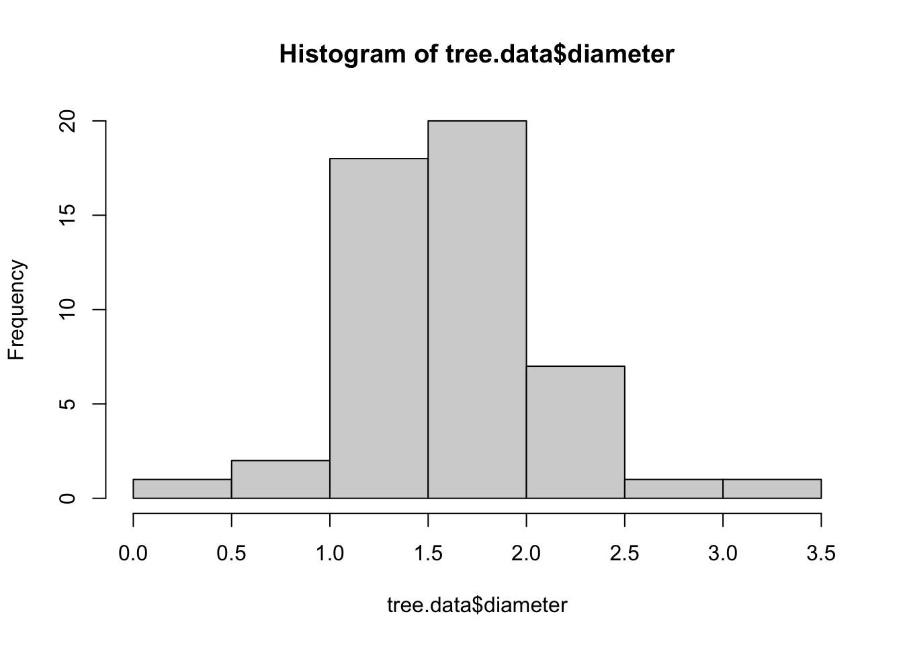
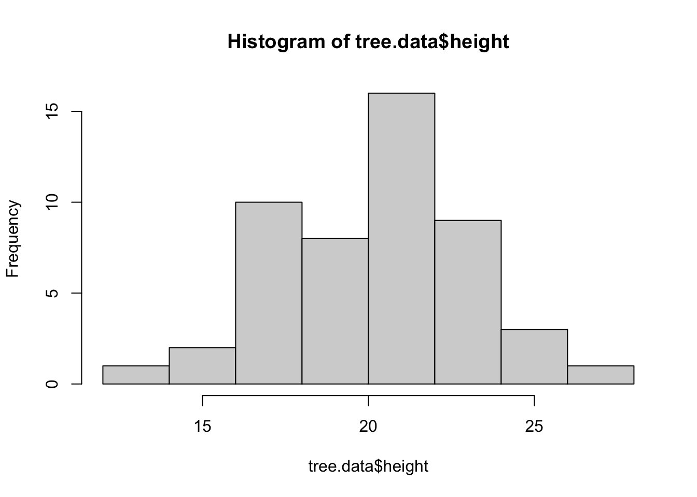
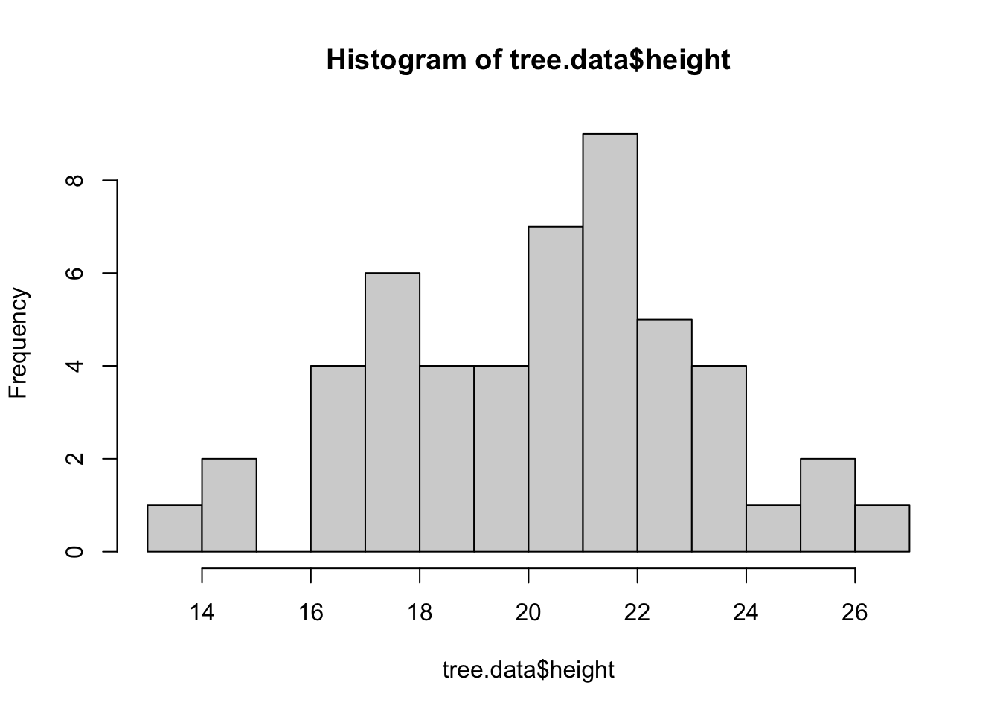
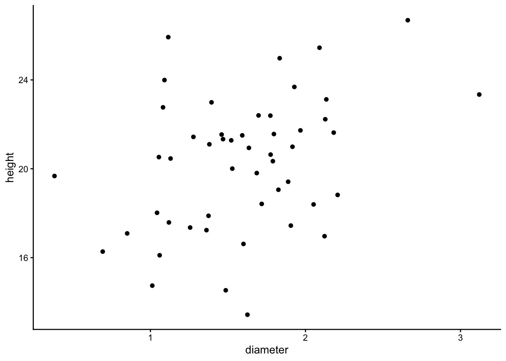
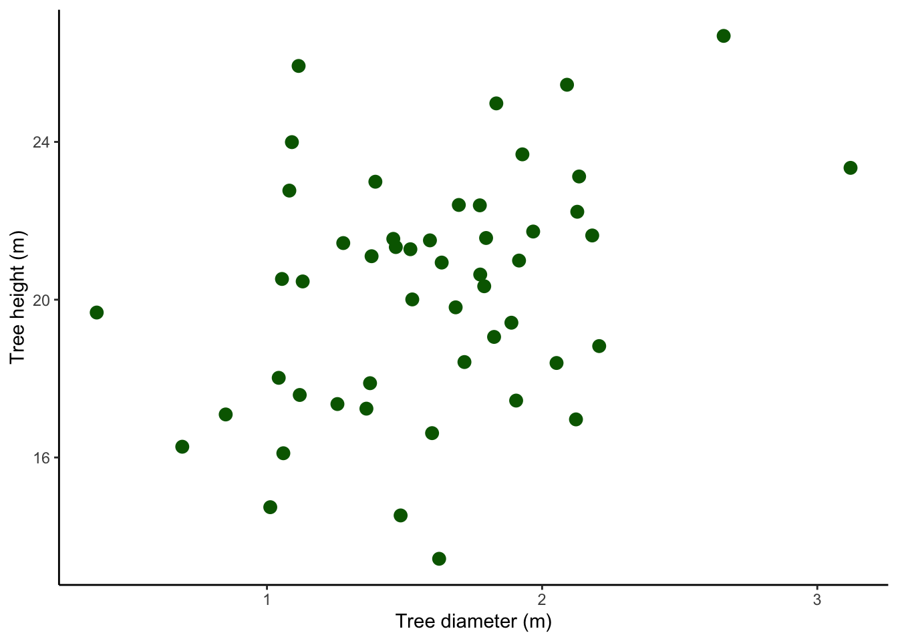

Code
tree.data<-read.table("data/trees.txt",
header = T, sep = "\t", dec = ",") En korrelationsanalys används om man vill undersöka om två kontinuerliga variabler samvarierar, men till skillnad från vid regressionsanalys så har man nu ingen hypotes om att det finns ett orsakssamband mellan dem. Det spelar alltså ingen roll vilken variabel som är på y-axeln och vilken som är på x-axeln.
Korrelationer används ofta om man vill undersöka mönster snarare än att testa hypoteser.
Vi vill undersöka om det finns en korrelation mellan diametern och höjden på ett antal trädindivider av samma art.
Ladda ner följande fil trees.txt (högerklicka, välj “spara länk som”) och spara filen på din hårddisk i en mapp med ett lämpligt namn.
Fortsätt med att läsa in ett dataset och ge det ett namn, i det här fallet kallar vi det tree.data. En detaljerad beskrivning i hur man läser in filer finns i vår tidigare tutorial Läsa in data i R.
Glöm inte att dokumentera din kod i ett script, med kommentarer som förklarar vad du gör! Se vår tutorial om script om du behöver påminnelse om hur man skapar och använder script.
tree.data<-read.table("data/trees.txt",
header = T, sep = "\t", dec = ",") Börja med att titta på datans struktur med str().
str(tree.data)'data.frame': 50 obs. of 2 variables:
$ diameter: num 1.49 1.64 1.06 1.77 1.01 ...
$ height : num 14.5 20.9 16.1 22.4 14.7 ...$ diameter: num betyder att värderna i kolumnen diameter är decimaltal (numeric)
$ height: num betyder att värderna i kolumnen height är decimaltal (numeric)
Visa sedan de fem första raderna av ditt dataset med head() för att se att allt ser korrekt ut
head(tree.data) diameter height
1 1.485763 14.53057
2 1.635011 20.94121
3 1.059496 16.10711
4 1.773606 22.39200
5 1.012026 14.73974
6 1.905565 17.44242Vi gör en graf med plot(). Eftersom vi inte har någon hypotes om ett orsakssamband mellan våra variabler spelar det ingen roll vilken vi har på vilken axel (hade vi haft en hypotes om ett orsakssamband så hade vi gjort en regression istället). Av samma anledning har vi inte heller någon regressionslinje i grafen när vi vill undersöka en korrelation.
plot(height ~ diameter, data = tree.data)
Ser det ut som att diameter och height är korrelerade med varandra? Är det i så fall en positiv eller negativ korrelation?
Vi vill nu göra en korrelationsanalys mellan våra två variablar.
Vi använder oss av funktionen cor.test() och väljer att spara resultatet i ett objekt som vi kallar m.trees.
m.trees <- cor.test(tree.data$diameter, tree.data$height, method = "p")Notera att korrelationstesten kräver att man anger modellen på ett annat sätt än i andra metoder. Istället för att ange våra variablar och sedan datasetet, måste vi ange dataset och variabel tillsammans, genom koden dataset$variabel. Till vänster om dollartecknet är datasetets namn, till höger är variabelnamnet.
method="p"specificerar metoden vi skall använda oss av för att göra korrelationen. p står för Pearson och används om data är normalfördelade.
Vi skriver modellnamnet och kör koden
m.trees
Pearson's product-moment correlation
data: tree.data$diameter and tree.data$height
t = 2.6562, df = 48, p-value = 0.0107
alternative hypothesis: true correlation is not equal to 0
95 percent confidence interval:
0.08844295 0.57866607
sample estimates:
cor
0.357978 Vi kan inspektera resultatet. Vi ser att p-värdet är mindre än 0.05, dvs vi har en signifikant korrelation. Vi får även teststatistika i form av t-värde och frihetsgrader (df).
Vi får även ett värde på korrelations-coefficienten cor (vanligtvis kallad r ), som är 0.36. r kan gå mellan -1 och +1, där -1 representerar en perfekt negativ korrelation, +1 representerar en perfekt positiv korrelation och 0 betyder att en korrelation saknas. Vi har en positiv korrelation. Stämmer det när du inspekterar grafen ovan?
Notera att r (i korrelationsanalyser) och r2 (i regressioner) inte är samma sak. r skall inte heller tolkas som en regressionskoefficient (som ju kan anta hur positiva eller negativa värden som helst, medan r alltid ligger mellan -1 och +1).
Trädens höjd är positivt korrelerad med diametern (t = 2,66, df = 48, p = 0,011, r = 0,38).
Eftersom vi inte har någon hypotes om orsakssamband (det är därför vi gör en korrelation och inte en regression) kan man även uttrycka samma mening med variablarna omkastade:
Trädens diameter är positivt korrelerad med höjden (t = 2,66, df = 48, p = 0,011, r = 0,38).
Det finns ingen implementering av plot(modellnamn)för korrelationstest, så vi får istället undersöka om våra data var normalfördelade. Det kan göras grafiskt eller med ett test. Om data inte verkar vara normalfördelade använder du method = "s" i modellen (det är en mindre kraftfull metod som dock kan hantera icke-normalfördelade data).
Histogram har värdet hos din variabel på x-axeln, och frekvens (antalet observationer) på y-axeln. En normalfördelning har flest observationer av värden runt medelvärdet, och antalet observationer minskar sedan symmetriskt om man går mot extremare värden.
hist(tree.data$diameter)
hist(tree.data$height)
Det ser normalfördelat ut. Om det blir för få staplar kan man ange antal staplar med koden breaks =. Man får testa sig fram till ett lämpligt antal breaks.
hist(tree.data$height, breaks = 14)
Vi avslutar med att göra en publiceringsduglig figur, och använder oss av paketet ggplot2. Om du inte sedan tidigare har paketet installerat så gör du det med koden install.packages("ggplot2"). Innan du använder paketet behöver du läsa in det i din session i R genom funktionen library()
library(ggplot2)
plot.trees.simple <- ggplot(tree.data, aes(x = diameter, y = height)) +
geom_point() +
theme_classic()
plot.trees.simple
Koden är densamma som för regressioner, förutom att vi tagit bort regressionslinjen eftersom vi gör en korrelation. Se vår tidigare beskrivning för en förklarad kod.
Den blev helt ok, men vi kan förbättra den.
Vi vill att det skall stå “Tree diameter (m)” på x-axeln, fixas med xlab()
Vi vill att det skall stå “Tree height (m)” på y-axeln, fixas med ylab()
Vi vill välja gröna punkter, och vi vill att de skall vara lite större,fixas med cex och color inom geom_point()
library(ggplot2)
plot.trees.final <- ggplot(tree.data, aes(x = diameter, y = height)) +
geom_point(cex = 3, colour = "darkgreen") +
xlab("Tree diameter (m)")+
ylab("Tree height (m)")+
theme_classic()
plot.trees.final